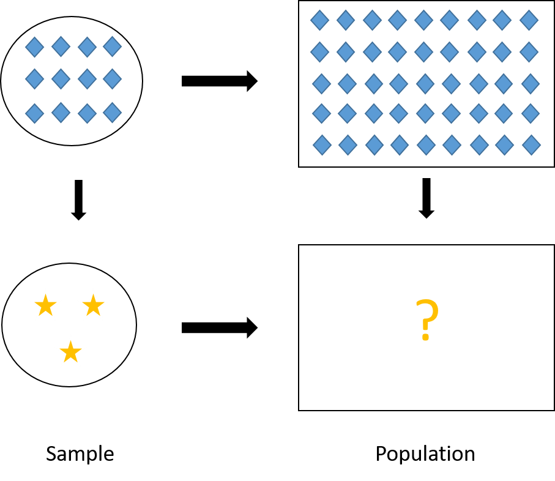
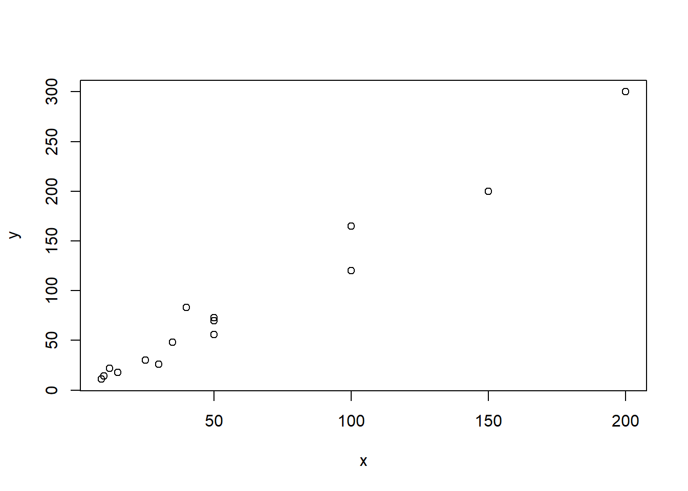
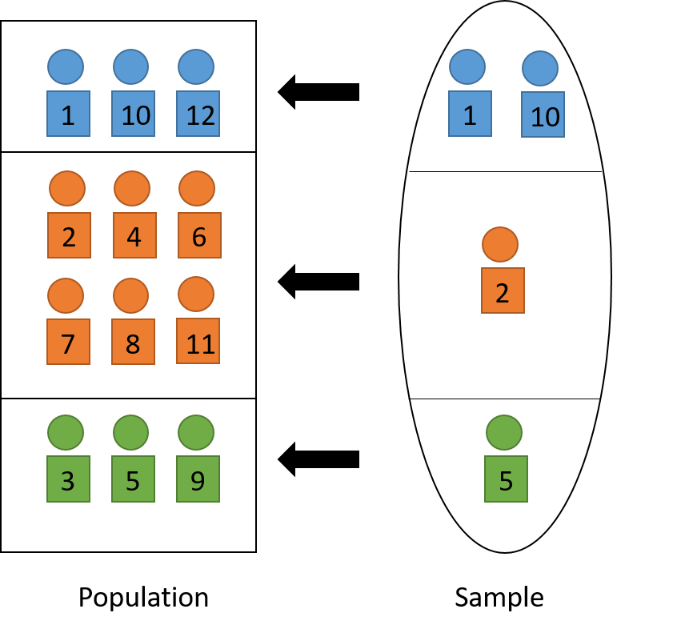
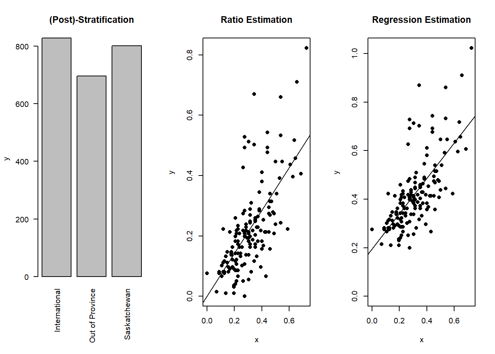

4 Ratio and Regression Estimators
4.1 Auxiliary Variables
In Chapter 3, we learn that if we sample using a stratification variable, we may be able to lower the variance of our estimation. Specifically, we learned in Section 3.3.2 that in stratified sampling with proportional allocation, the stratification variable needs to be predictive of the variable of interest \(Y\) so that the stratum means \(\overline{y}_{U,h}\) are different from one stratum to another.
In this chapter, we will learn how to use auxiliary variable \(X\) that gives additional information about \(Y\) to better estimate the mean and total of \(Y\) in the population.
4.2 Ratio Estimator
4.2.1 Motivating Example and Definition
Suppose we want to estimate the total rent paid by USask students \(t_{U,y} = \sum_{i=1}^N y_i\).
In SRS, we use the HT estimator \(\widehat{T}_{HT} = N\overline{Y}_S = N \frac{\sum_{i\in S} y_i}{n}\), in which:
| Quantity | Sample | Population |
|---|---|---|
| Total | \(\sum_{i \in S} y_i\) | \(t_{U,y} = ?\) |
| Size | \(\sum_{i \in S} 1 = n\) | \(\sum_{i=1}^N 1 = N\) |
Note that we know the sample quantities from the sample we collected. On the other hand, we do not know the population because we did not collect the data on everyone. Nevertheless, by knowing one additional piece of information from the population, which is the population size \(N\), we are able to estimate a population quantity, which is \(t_{U,y}\), using \(\widehat{T}_{HT} = N \frac{\sum_{i\in S} y_i}{n}\).
Now suppose that I don’t know the population size \(N\) but I know some other quantities from the population, for example, the number of students from Arts and Science. Let \(x_i\) denote whether the \(i\)th student come from Arts and Science, then, \(\sum_{i=1}^N x_i\) is the number of Arts and Science students in the population. As a result, the information I have is:
| Quantity | Sample | Population |
|---|---|---|
| Total | \(\sum_{i \in S} y_i = n\overline{Y}_S\) | \(t_{U,y} = N\overline{y}_U = ?\) |
| No. of A&S students | \(\sum_{i \in S} x_i = n\overline{X}_S\) | \(t_{U,x} = \sum_{i=1}^N x_i = N\overline{x}_U\) |
Using the similar logic as the HT estimator, we replace
\(n = \sum_{i \in S} 1\) by \(\sum_{i \in S} x_i\), and
\(N = \sum_{i=1}^N 1\) by \(t_{U,x} = \sum_{i=1}^N x_i\),
we then obtain the ratio estimator under SRS: \[\begin{equation} \widehat{T}_r = t_{U,x}\frac{\sum_{i\in S} y_i}{\sum_{i\in S}x_i} = t_{U,x} \frac{\overline{Y}_S}{\overline{X}_S} \tag{4.1} \end{equation}\]
This logic is similar to the three-number problem we learned in primary school: when we have four quantities that are proportional to one another, if we know three quantities, we can calculate the other quantity. In our case, we have \[ \frac{t_{U,y}}{\overline{y}_U} = \frac{t_{U,x}}{\overline{x}_U} = N \] Replacing \(\overline{y}_U\) and \(\overline{x}_U\) by their sample versions we have the approximated proportional relationship: \[ \frac{\overline{Y}_S}{\overline{X}_S} \approx \frac{t_{U,y}}{t_{U,x}}. \] We know \(\overline{Y}_S\) and \(\overline{X}_S\) from the sample and \(t_{U,x}\) from the population. Now we want to estimate \(t_{U,y}\), so we use the ratio estimator formula in Equation (4.1). A visual illustration of ratio estimator is give in Figure 4.1.

Figure 4.1: Visual illustration of ratio estimator. In our case of ratio estimator, \(Y\) is the stars, and \(X\) is the diamonds.
4.2.2 Why Ratio Estimator?
There are five main reasons for us to use ratio estimators:
when the population size \(N\) is unknown or difficult to obtain,
Example 4.1 Suppose we are fishermen and we caught a big haul of fish. In the haul, there can be small fish, crabs, squid, etc., but big fish are the ones that we can sell for good price. We are now interested in estimating the total number of fish that are larger than 12 cm. However, the haul is big, how do we measure and count the number of fish that are larger than 12cm?
One way to solve this problem is to use weight (\(X\)) as the auxiliary variable for the indicator that a fish is larger than 12 cm (\(Y\)). In particular, we can
take an SRS sample from the haul,
count the number of fish that are larger than 12 cm from the sample to obtain \(\sum_{i\in S}y_i\), (here \(y_i\) indicates if the \(i\)th fish is larger than 12 cm)
weigh the sample to obtain \(\sum_{i\in S}x_i\), (here \(x_i\) is the weight of the \(i\)th fish)
weigh the whole haul to obtain \(t_{U,x}\),
finally, we can use the ratio estimator \(\widehat{T}_r = t_{U,x} \frac{\sum_{i\in S}y_i}{\sum_{i \in S} x_i}\).
when the ratio \(b_U = \frac{t_{U,y}}{t_{U,x}} = \frac{\overline{y}_U}{\overline{x}_U}\) is the parameter of interest,
Example 4.2 Suppose we are an agricultural scientist who developed a new crop and want to estimate the yield of grain (per acre) of the crop. We can plant the crop on multiple fields and record
\(y_i\): the yield of grain in the \(i\)th field
\(x_i\): the area of the \(i\)th field in acre
Then we are interested in the ratio \(b_U = \frac{t_{U,y}}{t_{U,x}}\), that is, the yield of grain per acre.
In the ratio estimator \[ \widehat{T}_{r} = t_x\frac{\sum_{i\in S}y_i}{\sum_{i\in S}x_i} = t_x\frac{\overline{Y}_S}{\overline{X}_S} = t_x\widehat{B}_r, \] \(\widehat{B}_r = \frac{\overline{Y}_S}{\overline{X}_S}\) estimates the ratio \(b_U\) that we are interested in.
when we want to adjust the estimate so that it reflect the population’s demographics,
Example 4.3 Suppose there are \(N = 4,000\) students in which \(2,700\) are women and \(1,300\) are men. Suppose we take an SRS of size \(n = 400\), in which there happens to be \(240\) women and \(160\) men. This sample is not representative in terms of the women-men ratio in the population. We can adjust for this using ratio estimators as follows.
Suppose our interest is in estimating the number of students who took at least one programming course (i.e., know how to code). Let \(y_i\) be the indicator whether the \(i\)th student took at least one programming course. Suppose in our sample, we find 84 women took programming and 40 for men.
Usually, for SRS we will use the HT estimator to estimate the total number of students in the population who took at least one programming course. \[ N\overline{Y}_S = 4,000 \times \frac{84+40}{400} = 1,240 \]
However, the sample we use to calculate this estimate represents less women (\(240/400 = 60\%\)) than what we have in the population (\(2700/4000 = 67.5\%\)). Similarly, the sample has more men (\(160/240 = 40\%\)) compared to what we have in the population (\(1300/4000 = 32.5\%\)).
What we can do is to get a ratio estimate for the number of women students in the population who took at least one programming course: \[ \frac{84}{240}\times 2,700 = 945, \] and a ratio estimate for the number of men students in the population who took at least one programming course: \[ \frac{40}{160}\times 1,300 = 325, \] then sum them together to get the estimate of the total number of students in the population who took at least one programming course: \[ 945 + 325 = 1270. \]
You may notice that this type of estimate is similar to the HT estimator in stratified sampling we learned in Chapter 3. However, the difference is that in the previous chapter, the sampling design was stratified sampling and we used the HT estimator; while here the sampling design is SRS and we use the ratio estimator. Here, the ``stratification” and correction for stratification happens after the data is collected. Hence, this method is called post-stratification and we will learn more about it in Section 4.3.1.
when we want to adjust for nonresponse,
Example 4.4 Suppose we are interested in investigating the total rent income of rental properties in Saskatoon. Let \(y_i\) denote the amount of monthly rent income in the \(i\)th building and \(x_i\) denote the number of rental units in the \(i\)th building.
We sent out an interview survey to buildings. However, some buildings won’t answer the survey. It can be that the non-respondents are private landlords who own smaller buildings and do not respond to emails well.
In this case, the sample data we collect will represent responses from big buildings which have more rental units and rental income, i.e., \(y_i\) for these buildings are high. Then \(\overline{Y}_S\) will be high and \(N\overline{Y}_S\) will tend to overestimate \(t_{U,y}\), which is the total rental income, from both big and small buildings. Similarly, \(N\overline{X}_S\) will tend to overestimate \(t_{U,x}\), which is the total number of rental units in Saskatoon, as well.
Now, if we know \(t_{U,x}\) from the city’s registry, we can rescale \(N\overline{Y}_S\) to get a better estimate of the total rental income using a ratio estimator \[ \frac{N\overline{Y}_S}{N\overline{X}_S}t_{U,x} = \frac{\overline{Y}_S}{\overline{X}_S}t_{U,x} = \widehat{T}_r. \] with \(\frac{t_{U,x}}{N\overline{X}_S} < 1\) being the contracting scalar that reduces \(N\overline{Y}_S\), which overestimate \(t_{U,y}\), to a better estimate.
when we want to use auxiliary information to increase the precision, i.e., lower the variance, of our estimation in means and totals. We will see this in the next sections.
In summary, we have the following summaries of ratio estimators for the population total, mean and ratio under SRS:
| Quantity | Parameter | Estimator |
|---|---|---|
| Total | \(t_{U,y}\) | \(\color{red}{\widehat{T}_r = \frac{\overline{Y}_S}{\overline{X}_S}t_{U,x}} = \widehat{B}_rt_{U,x}\) |
| Mean | \(\overline{y}_U\) | \(\color{red}{\widehat{\overline{Y}}_r} = \frac{1}{N}\widehat{T}_r = \color{red}{\frac{\overline{Y}_S}{\overline{X}_S}\overline{x}_{U}} = \widehat{B}_r\overline{x}_{U}\) |
| Ratio | \(b_U = \frac{\overline{y}_U}{\overline{x}_U} = \frac{t_{U,y}}{t_{U,x}}\) | \(\color{red}{\widehat{B}_r = \frac{\overline{Y}_S}{\overline{X}_S}}\) |
4.2.3 Bias
Different from the HT estimator for SRS in Section 2.6.2, the ratio estimators are biased with \[\begin{equation} Bias(\widehat{\overline{Y}}_r) = -Cov(\widehat{B}_r, \overline{X}_S) \tag{4.2} \end{equation}\]
Proof. We have: \[\begin{align*} Bias(\widehat{\overline{Y}}_r) & = \E[\widehat{\overline{Y}}_r - \overline{y}_U] \\ & = \E\left[\frac{\overline{Y}_S}{\overline{X}_S}\overline{x}_U - \overline{y}_U\right] \\ & = \E\left[\overline{Y}_S\left(1-\frac{\overline{X}_S-\overline{x}_U}{\overline{X}_S}\right)- \overline{y}_U\right] \\ & = \E[\overline{Y}_S - \overline{y}_U] - \E\left[\frac{\overline{Y}_S}{\overline{X}_S}(\overline{X}_S - \overline{x}_U)\right] \\ & = -\E[\widehat{B}_r(\overline{X}_S - \overline{x}_U)] \\ & = -\E[\widehat{B}_r\overline{X}_S] + \E[\widehat{B}_r\overline{x}_U] \\ & = -\E[\widehat{B}_r\overline{X}_S] + \overline{x}_U\E[\widehat{B}_r] \\ & = -\E[\widehat{B}_r\overline{X}_S] + \E[\overline{X}_S]\E[\widehat{B}_r] \\ & = -Cov(\widehat{B}_r,\overline{X}_S) \end{align*}\]
In summary, we have the biases under SRS for the three ratio estimators:
| Type | Estimator | Bias |
|---|---|---|
| Mean | \(\widehat{\overline{Y}}_r = \frac{\overline{Y}_S}{\overline{X}_S}\overline{x}_{U}\) | \(-Cov(\widehat{B}_r, \overline{X}_S)\) |
| Total | \(\widehat{T}_r = \frac{\overline{Y}_S}{\overline{X}_S}t_{U,x} = \color{red}{N}\widehat{\overline{Y}}_r\) | \(-\color{red}{N}Cov(\widehat{B}_r, \overline{X}_S)\) |
| Ratio | \(\widehat{B}_r = \frac{\overline{Y}_S}{\overline{X}_S} = \color{red}{\frac{1}{\overline{x}_{U}}}\widehat{\overline{Y}}_r\) | \(-\color{red}{\frac{1}{\overline{x}_U}}Cov(\widehat{B}_r, \overline{X}_S)\) |
The biases, for example \(Bias(\widehat{\overline{Y}}_r) = -Cov(\widehat{B}_r = -\E[(\widehat{B}_r - \E[\widehat{B}_r])(\overline{X}_S - \overline{x}_U)]\), will be small when \((\widehat{B}_r - \E[\widehat{B}_r])\) and \((\overline{X}_S - \overline{x}_U)\) are small, which happens
when sample size \(n\) is large and \(\overline{X}_S \approx \E[\overline{X}_S] = \overline{x}_U\) and \(\widehat{B}_r \approx \E[\widehat{B}_r]\) by law of large number, and/or
when \(X\approx \propto Y\) and \(\widehat{B}_r\) is close to a constant.
4.2.4 Mean Squared Error
The Mean Squared Error of an estimator is defined as the expectation in distance between the estimator and the parameter of interest: \[\begin{equation} MSE(\widehat{\theta}) = \E[(\widehat{\theta} - \theta)^2] = Bias^2(\widehat{\theta}) + Var(\widehat{\theta}) \tag{4.3} \end{equation}\]
Proof. We have: \[\begin{align*} MSE(\widehat{\theta}) & = \E[(\widehat{\theta} - \theta)^2] \\ & = \E[(\widehat{\theta} - \E[\widehat{\theta}] + \E[\widehat{\theta}] - \theta)^2] \\ & = \E[(\widehat{\theta} - \E[\widehat{\theta}])^2] - 2\E[(\widehat{\theta} - \E[\widehat{\theta}])(\E[\widehat{\theta}] - \theta)] + \E[(\E[\widehat{\theta}] - \theta)^2] \\ & = Var(\widehat{\theta}) - 2(\E[\widehat{\theta}] - \theta)\E[\widehat{\theta} - \E[\widehat{\theta}]] + (\E[\widehat{\theta}] - \theta)^2 \\ & = Var(\widehat{\theta}) + Bias^2(\widehat{\theta}) \end{align*}\] where the fourth equation is because \(\E[\widehat{\theta}]\) and \(\theta\) are fixed quantities, and the fifth equation is because \(\E[\widehat{\theta} - \E[\widehat{\theta}]] = 0\).
For ratio estimator, we have \[\begin{equation} MSE_{SRS}(\widehat{\overline{Y}}_r) = \E[(\widehat{\overline{Y}}_r - \overline{y}_U)^2] \approx \left(1-\frac{n}{N}\right)\frac{s_{U,d}^2}{n} \tag{4.4} \end{equation}\] where \(d_i = y_i - b_Ux_i\) and \(s_{U,d}^2 = \frac{1}{N-1}\sum_{i=1}^N d_i^2\).
Proof. We have: \[\begin{align*} MSE_{SRS}(\widehat{\overline{Y}}_r) & = \E[(\widehat{\overline{Y}}_r - \overline{y}_U)^2] \\ & = \E\left[\left\{\frac{\overline{Y}_S}{\overline{X}_S}\overline{x}_U - b_U\overline{x}_U\right\}^2\right] \\ & = \E\left[\left\{\overline{Y}_S\left(1-\frac{\overline{X}_S-\overline{x}_U}{\overline{X}_S}\right)- b_U\overline{X}_S\left(1- \frac{\overline{X}_S - \overline{x}_U}{\overline{X}_S}\right) \right\}^2\right] \\ & = \E\left[\left\{(\overline{Y}_S - b_U\overline{X}_S) \left(1- \frac{\overline{X}_S - \overline{x}_U}{\overline{X}_S}\right) \right\}^2\right] \\ & = \E\left[(\overline{Y}_S - b_U\overline{X}_S)^2 + (\overline{Y}_S - b_U\overline{X}_S)^2 \left\{\left(\frac{\overline{X}_S - \overline{x}_U}{\overline{X}_S}\right)^2 - 2 \frac{\overline{X}_S - \overline{x}_U}{\overline{X}_S} \right\}\right] \\ & \approx \E[(\overline{Y}_S - b_U\overline{X}_S)^2] \end{align*}\] because the second term is the multiplication of the first term and small error terms so it is generally small compared to the first term.
Let \(d_i = y_i - b_Ux_i\), we have \[\begin{align*} MSE_{SRS}(\widehat{\overline{Y}}_r) & \approx \E[(\overline{Y}_S - b_U\overline{X}_S)^2] \\ & = \E[(\overline{Y}_S - b_U\overline{X}_S)^2] - \left(\E[\overline{Y}_S - b_U\overline{X}_S]\right)^2 \\ & = Var_{SRS}\left(\overline{Y}_S - b_U\overline{X}_S\right) \\ & = Var_{SRS}\left(\frac{1}{n}\sum_{i\in S}(y_i - b_Ux_i)\right) \\ & = Var_{SRS}\left(\frac{1}{n}\sum_{i\in S}d_i\right) \\ & = Var_{SRS}(\overline{D}_S) \\ & = \left(1-\frac{n}{N}\right)\frac{s_{U,d}^2}{n} \end{align*}\] where the second equality is because \[ \E[\overline{Y}_S - b_U\overline{X}_S] = \overline{y}_U - \frac{\overline{y}_U}{\overline{x}_U}\overline{x}_U = 0. \]
Since \[ \overline{d}_U = \frac{1}{N}\sum_{i=1}^N(y_i - b_Ux_i) = \overline{y}_U - \frac{\overline{y}_U}{\overline{x}_U}\overline{x}_U = 0 \] so \[ s_{U,d}^2 = \frac{1}{N-1}\sum_{i=1}^N(d_i - \overline{d}_U)^2 = \frac{1}{N-1}\sum_{i=1}^N d_i^2. \]
The MSE will be small if \(s_{U,d}^2\) is small, which is when \(d_i^2 = (y_i - \overline{b}_Ux_i)^2\) are small. This happens when the approximation \(y_i \approx \overline{b}_U x_i\) is good (has small errors), and \(y_i \approx \propto x_i\).
Another form of Equation (4.4) that is useful for hand calculation is: \[\begin{equation} MSE_{SRS}(\widehat{\overline{Y}}_r) \approx \left(1-\frac{n}{N}\right)\frac{s_{U,d}^2}{n} = \left(1-\frac{n}{N}\right)\frac{s_{U,y}^2 - 2b_Ur_Us_{U,x}s_{U,y}+b_U^2s_{U,x}^2}{n} \tag{4.5} \end{equation}\] where \(s_{U,x}^2 = \frac{1}{N-1}\sum_{i=1}^N (x_i - \overline{x}_U)^2\) and \(s_{U,y}^2 = \frac{1}{N-1}\sum_{i=1}^N (y_i - \overline{y}_U)^2\) and \(r_{U} = \frac{\sum_{i=1}^N(x_i - \overline{y}_U)(x_i - \overline{y}_U)}{(N-1)s_{U,x}s_{U,y}}\).
Proof. We have: \[\begin{align*} d_i^2 & = (d_i - \overline{d}_U)^2 \\ & = \{(y_i - b_Ux_i) - (\overline{y}_U - b_U\overline{x}_U)\}^2 \\ & = \{(y_i - \overline{y}_U) - b_U(x_i - \overline{x}_U)\}^2 \\ & = \{(y_i - \overline{y}_U)^2 - 2b_U(y_i - \overline{y}_U)(x_i - \overline{x}_U) + b^2_U(x_i - \overline{x}_U)^2\}. \end{align*}\] The formula follows that \[\begin{align*} s_{U,d}^2 & = \frac{1}{N-1}\sum_{i=1}^N d_i^2 \\ & = \frac{1}{N-1}\sum_{i=1}^N \{(y_i - \overline{y}_U)^2 - 2b_U(y_i - \overline{y}_U)(x_i - \overline{x}_U) + b^2_U(x_i - \overline{x}_U)^2\} \\ & = s_{U,y}^2 - 2b_Ur_Us_{U,x}s_{U,y}+b_U^2s_{U,x}^2. \end{align*}\]
4.2.5 Compared to HT estimator
From Equation (4.5), we have the MSE for ratio estimator under SRS: \[ MSE_{SRS}(\widehat{\overline{Y}}_r) \approx \left(1-\frac{n}{N}\right)\frac{s_{U,y}^2 - 2b_Ur_Us_{U,x}s_{U,y}+b_U^2s_{U,x}^2}{n} \]
On the other hand, since bias of the HT estimator is 0, from Equations (4.3) and (2.15), we have the MSE for HT estimator under SRS:
\[ MSE_{SRS}(\widehat{\overline{Y}}_{HT}) = Var_{SRS}(\widehat{\overline{Y}}_{HT}) = \left(1-\frac{n}{N}\right)\frac{s_{U,y}^2}{n} \]
Comparing the two MSE formulas, we deduce \[ MSE_{SRS}(\widehat{\overline{Y}}_r) \le MSE_{SRS}(\widehat{\overline{Y}}_{HT}) \hspace{5mm} \Leftrightarrow \hspace{5mm} r_U \ge \frac{1}{2}\frac{CV(x)}{CV(y)} \] where \(CV(x) = \frac{s_{U,x}}{\overline{x}_U}\) is the coefficient of variation defined in Section 2.9. Similarly \(CV(y) = \frac{s_{U,y}}{\overline{y}_U}\).
Proof. We have: \[\begin{align*} & MSE_{SRS}(\widehat{\overline{Y}}_r) - MSE_{SRS}(\widehat{\overline{Y}}_{HT}) \\ & \approx \left(1-\frac{n}{N}\right)\frac{s_{U,y}^2 - 2b_Ur_Us_{U,x}s_{U,y}+b_U^2s_{U,x}^2}{n} - \left(1-\frac{n}{N}\right)\frac{s_{U,y}^2}{n} \\ & = \left(1-\frac{n}{N}\right)\frac{b_Us_{U,x}(-2r_Us_{U,y}+b_Us_{U,x})}{n} \\ \end{align*}\] This is smaller or equal to 0 if and only if \[\begin{align*} & -2r_Us_{U,y}+b_Us_{U,x} \le 0 \\ \Leftrightarrow \hspace{5mm} & r_U \ge \frac{b_Us_{U,x}}{2s_{U,y}} = \frac{1}{2}\frac{\overline{y}_U}{\overline{x}_U}\frac{s_{U,x}}{s_{U,y}} = \frac{1}{2}\frac{CV(x)}{CV(y)}. \end{align*}\]
Therefore, the correlation coefficient \(r_U\) needs to be large (i.e., strong linear correlation between \(X\) and \(Y\)) so that the mean squared error of the ratio estimator is smaller than the mean squared error of the HT estimator. That is, we may accept some bias by using the ratio estimator but overall, the errors of the estimator can still be smaller than using the unbiased HT estimator.
4.2.6 Variance Estimation
We can use the MSE from Equation (4.3), especially when the sample size \(n\) is large and bias is small, to approximate the variance of the ratio estimator.
Proof. We can approximate the bias of the ratio estimator of the ratio as follows: \[\begin{align*} \E[\widehat{B}_r - B] & = \E\left[\frac{\overline{Y}_S}{\overline{X}_S} - \frac{\overline{y}_U}{\overline{x}_U}\right] \\ & = \E\left[\frac{\overline{Y}_S}{\overline{x}_U}\left(\frac{\overline{x}_U}{\overline{X}_S}\right) - \frac{\overline{y}_U}{\overline{x}_U}\right] \\ & = \E\left[\frac{\overline{Y}_S}{\overline{x}_U}\left(1-\frac{\overline{X}_S - \overline{x}_U}{\overline{X}_S}\right) - \frac{\overline{y}_U}{\overline{x}_U}\right] \\ & = - \E\left[\frac{\overline{Y}_S(\overline{X}_S - \overline{x}_U)}{\overline{x}_U\overline{X}_S}\right] \\ & = \E\left[\frac{\overline{Y}_S(\overline{X}_S - \overline{x}_U)}{\overline{x}_U^2}\left(\frac{\overline{X}_S - \overline{x}_U}{\overline{X}_S} - 1\right)\right] \\ & = \frac{1}{\overline{x}_U^2} \E\left[\widehat{B}_r(\overline{X}_S - \overline{x}_U)^2 - \overline{Y}_S(\overline{X}_S - \overline{x}_U)\right] \\ & = \frac{1}{\overline{x}_U^2} \left\{b_UVar(\overline{X}_S) - Cov(\overline{X}_S, \overline{Y}_S) + \E\left[(\widehat{B}_r-b_U)(\overline{X}_S - \overline{x}_U)^2\right]\right\} \\ & \approx \frac{1}{\overline{x}_U^2} \left\{b_U Var(\overline{X}_S) - Cov(\overline{X}_S, \overline{Y}_S) \right\} \\ & = \frac{1}{\overline{x}_U^2} \left\{b_U \left(1-\frac{n}{N}\right)\frac{s^2_{U,x}}{n} - \left(1-\frac{n}{N}\right)\frac{\sum_{i=1}^N(x_i - \overline{x}_U)(y_i - \overline{y}_U)}{n(N-1)} \right\} \\ & = \frac{1}{\overline{x}_U^2} \left\{b_U \left(1-\frac{n}{N}\right)\frac{s^2_{U,x}}{n} - \left(1-\frac{n}{N}\right)\frac{r_Us_{U,x}s_{U,y}}{n} \right\} \\ \end{align*}\] The approximation is because in the 7th equation, the third term is a product of an error term and another error term squared, so it is generally smaller than the first two terms, which are each the product of two errors.
Using the bias formula, we can see that the squared bias of \(\widehat{B}_r\) is approximately \[ Bias^2(\widehat{B}_r) \approx \frac{1}{\overline{x}_U^4}\left(1 - \frac{n}{N}\right)^2 \frac{1}{n^2}[b_Us_{U,x}^2 - r_Us_{U,x}s_{U,y}]^2 \] and from Equation (4.5), the MSE of \(\widehat{B}_r\) is \[ MSE(\widehat{B}_r) \approx \left(1-\frac{n}{N}\right)\frac{1}{n\overline{x}_U^2}(s_{U,y}^2 - 2b_Ur_Us_{U,x}s_{U,y} + b_U^2s_{U,x}^2). \] So the \(MSE\) is of order \(1/n\), while the squared bias is of order \(1/n^2\), which means smaller compared to the \(MSE\). But \(MSE = Bias^2 + Var\), so most values of \(MSE\) comes from the variance, and we can say \(MSE(\widehat{B}_r) \approx Var(\widehat{B}_r)\).
To estimate the variance using sample data, we replace population quantities in the formulas by the corresponding sample quantities:
| Type | Estimator | Variance (approx) | Variance (est) |
|---|---|---|---|
| Mean | \(\widehat{\overline{Y}}_r = \frac{\overline{Y}_S}{\overline{X}_S}\overline{x}_U\) | \(\left(1-\frac{n}{N}\right)\frac{s_{U,d}^2}{n}\) | \(\left(1-\frac{n}{N}\right)\frac{S_{S,e}^2}{n}\) |
| Total | \(\widehat{T}_r = \color{red}{N}\widehat{\overline{Y}}_r\) | \(\color{red}{N^2}\left(1-\frac{n}{N}\right)\frac{s_{U,d}^2}{n}\) | \(\color{red}{N^2}\left(1-\frac{n}{N}\right)\frac{S_{S,e}^2}{n}\) |
| Ratio | \(\widehat{B}_r = \color{red}{\frac{1}{\overline{x}_U}}\widehat{\overline{Y}}_r\) | \(\color{red}{\left(\frac{1}{\overline{x}_U}\right)^2}\left(1-\frac{n}{N}\right)\frac{s_{U,d}^2}{n}\) | \(\color{red}{\left(\frac{1}{\overline{x}_U}\right)^2}\left(1-\frac{n}{N}\right)\frac{S_{S,e}^2}{n}\) |
where \(e_i = y_i - \widehat{B}_rx_i = y_i - \frac{\overline{Y}_S}{\overline{X}_S}x_i\) and \(S_{S,e}^2 = \frac{1}{n-1}\sum_{i\in S}e_i^2\). Note that in these formulas, \(N\) and \(\overline{x}_U\) are population quantities so they are fixed and can be treated as constants.
Example 4.5 The manager of 7-Eleven is interested in estimating the total sale for all of its 300 branches. From last year record, the total sale (in thousands) for all the 300 branches is 21300. An SRS of 15 branches is taken this year, with the following results:
| Branch | Last year’s sales (\(X\)) | This year’s sales (\(Y\)) |
|---|---|---|
| 1 | 50 | 56 |
| 2 | 35 | 48 |
| 3 | 12 | 22 |
| 4 | 10 | 14 |
| 5 | 15 | 18 |
| 6 | 30 | 26 |
| 7 | 9 | 11 |
| 8 | 25 | 30 |
| 9 | 100 | 165 |
| 10 | 200 | 300 |
| 11 | 50 | 73 |
| 12 | 50 | 70 |
| 13 | 150 | 200 |
| 14 | 100 | 120 |
| 15 | 40 | 83 |
We can draw a scatter plot of this data
x <- c(50,35,12,10,15,30,9,25,100,200,
50,50,150,100,40)
y <- c(56,48,22,14,18,26,11,30,165,300,
73,70,200,120,83)
plot(x,y)
Figure 4.2: Relationship between last year’s and this year’s sales
We can see that there seems to be a strong linear relationship between \(X\) and \(Y\), so we conjecture that ratio estimator is helpful in this case. We will calculate the ratio estimators for the mean, total and ratio.
First, we extract the following information from the problem: \(n = 15\), \(N = 300\) and \(\sum_{i=1}^N x_i = t_x = 21300\).
We can also calculate from the data: \(\sum_{i=1}^n x_i = 876\), \(\sum_{i=1}^n y_i = 1236\), \(\sum_{i=1}^n x_i^2 = 94900\), \(\sum_{i=1}^n y_i^2 = 196884\), \(\sum_{i=1}^n x_iy_i = 135735\).
The sample means are \[ \bar{X}_S = \frac{1}{n}\sum_{i=1}^n x_i = \frac{876}{15} = 58.4 \] \[ \bar{Y}_S = \frac{1}{n}\sum_{i=1}^n y_i = \frac{1236}{15} = 82.4 \]
The sample variances are \[\begin{align*} S_{S,x}^2 & = \frac{1}{n-1}\sum_{i=1}^n(x_i - \overline{X}_S)^2 \\ & = \frac{1}{n-1}[(\sum_{i=1}^n x_i^2) - n(\overline{X}_S)^2] \\ & = \frac{1}{15-1}\times (94900 - 15\times 58.4^2) = 3124.4 \\ S_{S,y}^2 & = \frac{1}{n-1}[(\sum_{i=1}^n y_i^2) - n(\overline{Y}_S)^2] \\ & = \frac{1}{15-1}\times (196884 - 15\times 82.4^2) = 6788.4 \end{align*}\]
The sample correlation coefficient is \[\begin{align*} R_S & = \frac{\sum_{i=1}^n(x_i - \overline{X}_S)(y_i - \overline{Y}_S)}{(n-1)S_{S,x}S_{S,y}} \\ & = \frac{(\sum_{i=1}^m x_iy_i)-n(\overline{X}_S\overline{Y}_S)}{(n-1)S_{S,x}S_{S,y}} \\ & = \frac{135735 - 15\times 58.4\times 82.4}{(15-1)\sqrt{3124.4 \times 6788.4}} = 0.9857 \end{align*}\] This shows a strong positive linear relationship. Hence, expect the ratio estimators to be very helpful.
Now, we can calculate the ratio estimators: \[\begin{align*} \widehat{B}_r & = \frac{\overline{Y}_S}{\overline{X}_S} = \frac{82.4}{58.4} = 1.4110 \\ \widehat{\overline{Y}}_r & = \widehat{B}_r\overline{x}_U = 1.4110 \times \frac{21300}{300} = 100.181 \\ \widehat{T}_r & = \widehat{B}_r t_{U,x} = 1.4110 \times 21300 = 30054.3 \end{align*}\]
The variances of the ratio estimators are \[\begin{align*} & \widehat{Var}_{SRS}(\widehat{\overline{Y}}_r) \\ & \qquad = \left(1-\frac{n}{N}\right)\frac{S_{S,y}^2 - 2\widehat{B}_rR_SS_{S,x}S_{S,y} + \widehat{B}_r^2S_{S,x}^2}{n} \\ & \qquad = \left(1-\frac{15}{300}\right) \\ & \qquad \qquad \times \frac{6788.4 - 2\times 1.4110\times 0.9857\times \sqrt{6788.4\times 3124.4} + 1.4110^2\times 3124.4}{15} \\ & \qquad = 12.5561 \\ & \widehat{Var}_{SRS}(\widehat{T}_r) = N^2\widehat{Var}_{SRS}(\widehat{\overline{Y}}_r) = 300^2 \times12.5561 = 1130049 \\ & \widehat{Var}_{SRS}(\widehat{B}_r) = \frac{1}{\overline{x}_U^2}\widehat{Var}_{SRS}(\widehat{\overline{Y}}_r) = \frac{1}{(21300/300)}\times 12.5561 = 0.1768 \end{align*}\]
We can construct 95% confidence intervals for
Ratio: \(1.4110 \pm 1.96 \times \sqrt{0.1768} = (0.5869, 2.2351)\)
Mean: \(100.181 \pm 1.96 \times \sqrt{12.5561} = (93.2358, 107.1262)\)
Total: \(30054.3 \pm 1.96 \times \sqrt{1130049} = (27970.75, 32137.85)\)
To calculate the efficiency gain of using ratio estimator instead of HT etsimator, we first calculate the variance for the HT estimator \(\widehat{\overline{Y}}_{HT}\): \[ \widehat{Var}_{SRS}(\widehat{\overline{Y}}_{HT}) = \left(1-\frac{n}{N}\right)\frac{S_{S,y}^2}{n} = \left(1-\frac{15}{300}\right)\frac{6788.4}{15} = 429.932 \]
The efficiency gain is \[ 1-\frac{12.5561}{429.932} = 97.0795\%. \] As expected, we achieve a whooping amount of 97.0795% gain in efficiency by using the ratio estimator compared to using HT estimator.
Notes: When \(N\) is unknown, such as in Example 4.1, we can
Assume that \(N\) is large and thus \(1-\frac{n}{N} \approx 1\)
Approximate \(N\) by \(\frac{t_x}{\overline{X}_S}\)
Thus, the variance of the ratio estimators can be estimated by \[\begin{align*} \widehat{Var}_{SRS}(\widehat{\overline{Y}}_r) & = \frac{S_{S,y}^2 - 2\widehat{B}_rR_SS_{S,x}S_{S,y} + \widehat{B}_r^2S_{S,x}^2}{n} \\ \widehat{Var}_{SRS}(\widehat{T}_r) & = \left(\frac{t_x}{\overline{X}_S}\right)^2\widehat{Var}_{SRS}(\widehat{\overline{Y}}_r) \\ \widehat{Var}_{SRS}(\widehat{B}_r) & = \left(\frac{1}{\overline{X}_S}\right)^2\widehat{Var}_{SRS}(\widehat{\overline{Y}}_r) \end{align*}\]
4.2.7 R Code
Suppose we have the population dataset dat (This is an example. In reality, you do not have population data):
And suppose we obtain a sample data samp_dat from SRS. To do this, we run the following code:
#take SRS of the index
idx <- sample(1:nrow(dat), size = 150, replace = FALSE)
#get the sample dataset
samp_dat <- dat[idx,]We can use survey package to obtain ratio estimate. First, we have to specify the survey design, which is an SRS here:
#specifying the fpc as the population size
samp_dat$fpc <- nrow(dat)
#specify survey design
library(survey)
design.srs <- svydesign(ids = ~1,
data = samp_dat,
fpc = ~fpc)We can obtain the ratio estimate of the ratio \(\widehat{B}_r\) using the following code:
#ratio of rent price per square meter
srs.ratio <- svyratio(numerator=~rent,
denominator=~area,
design=design.srs)
srs.ratio## Ratio estimator: svyratio.survey.design2(numerator = ~rent, denominator = ~area,
## design = design.srs)
## Ratios=
## area
## rent 24.97163
## SEs=
## area
## rent 0.5517693We can obtain \(\widehat{T}_r\) using the following code
#suppose we know the population total t_{U,x}
known.x.total <- sum(dat$area)
#ratio estimator of the total
predict(srs.ratio,total=known.x.total)## $total
## area
## rent 20295789
##
## $se
## area
## rent 448452.74.3 Post-Stratification
As illustrated in Example 4.3, when taking samples using SRS, we may have a situation where the sample is not representative of the population in terms of one or more demographic variables. When we have reasons to believe that the variable of interest \(Y\) is different among the demographics, (for example, students from different departments may have different propensities to have taken a programming course), it may be a good idea to adjust for such a demographic variable so that the estimate better represent the population. We can use ratio estimator for this purpose.
4.3.1 Post-Stratification
Suppose we have \(H\) strata defined from a demographic stratification variable (such as department). Moreover, the \(h\)th stratum has \(N_h\) units in the population, and \(n_h\) units in the sample. We can use the ratio estimator to estimate the mean or total within the stratum by defining:
\(x_{h,i}\) to be the indicator whether unit \(i\) is in stratum \(h\)
\(y_{h,i}^* = y_i\times x_{h,i}\)
Then the ratio estimate of the population total of \(y\) for stratum \(h\) is \[ \widehat{T}_{r,h} = \frac{\sum_{i\in S}y^*_{h,i}}{\sum_{i\in S}x_{h,i}} \sum_{i=1}^N x_{h,i} = \frac{\sum_{i\in S_h}y_{i}}{n_h}N_h = N_h\overline{Y}_{S,h}. \] The post-stratified estimator for the population total will be the sum of the estimate for each stratum \[ \widehat{T}_{post} = \sum_{h=1}^H \widehat{T}_{r,h}. \]
Example 4.6 In Example 4.3, we first estimate the number of women students in the population who took at least one programming course, then estimate the number of men students in the population who took at least one programming course. Finally, we sum the two estimates up to get the post-stratification estimate of the total number of students in the population who took at least one programming course.
Notes: We can see that the post-stratified estimator \(\widehat{T}_{post}\) under SRS has the same form as the HT estimator \(\widehat{T}_{HT}\) under stratified sampling. However, the two are not the same, \(\widehat{T}_{post}\), being a sum of ratio estimators, is indeed biased because the data was collected under SRS, not stratified sampling, and the adjustment for stratification is done after the data collection. This is why the estimator is called post-stratified estimator.
The post-stratified estimator of the population mean is \[ \widehat{\overline{Y}}_{post}=\frac{1}{N}\widehat{T}_{post} = \sum_{h=1}^H \frac{N_h}{N}\overline{Y}_{S,h} \] If \(N_h/N\) is known, \(n_h\) is reasonably large (\(\ge 30\) or so), and \(n\) is large, we can use the variance for the HT estimator under stratified sampling with proportional allocation in Equation (3.8) as an approximation to the post-stratified variance: \[ Var_{SRS}(\widehat{\overline{Y}}_{post}) \approx Var_{strt, prop}(\widehat{\overline{Y}}_{HT}) = \left(1-\frac{n}{N}\right)\sum_{h=1}^H \frac{N_h}{N}\frac{s_{U,h}^2}{n} \]
Example 4.7 Continue with Example 4.3, suppose now we do not know population size \(N\), but we know that the population has \(N_1/N=67.5\%\) women and \(N_2/N = 32.5\%\) men. Again, we take an SRS of size \(n = 400\), and end up having \(n_1=240\) women and \(n_2=160\) men in our sample. From the sample, we learn that 84 of the sampled women and 40 of the sampled men took at least one programming course.
Let \(y_i\) be the indicator of whether a student took at least one programming course. Note here \(Y\) is a binary variable and the mean of a binary variable is the proportion.
Then the post-stratified estimate for the proportion of students who took at least one programming course in the population is \[ \widehat{\overline{Y}}_{post} = \sum_{h=1}^H \frac{N_h}{N}\overline{Y}_{S,h} = 67.5\% \times \frac{84}{240} + 32.5\% \times \frac{40}{160} = 31.75\% \] The variance of this estimate is \[\begin{align*} Var_{SRS}(\widehat{\overline{Y}}_{post}) & \approx \left(1-\frac{n}{N}\right)\sum_{h=1}^H \frac{N_h}{N}\frac{s_{U,h}^2}{n} \\ & \approx \sum_{h=1}^H \frac{N_h}{N}\frac{s_{U,h}^2}{n} \\ & = 67.5\% \times \frac{1}{400} \times \frac{240}{240-1} \times \frac{84}{240} \left(1 - \frac{84}{240}\right) \\ & \qquad + 32.5\% \times \frac{1}{400} \times \frac{160}{160-1} \times \frac{40}{160} \left(1 - \frac{40}{160}\right) \\ & = 0.0005388144 \end{align*}\] where in the second equation, we assume that \(N\) is large so the finite population correction (FPC) is approximately 1 and in the third equation, we use the variance formula for proportion: \[ S_{S,h}^2 = \frac{n}{n-1}\widehat{P}_{S,h}(1-\widehat{P}_{S,h}) = \frac{n}{n-1}\overline{Y}_{S,h}(1-\overline{Y}_{S,h}) \]
Notes:
Note that the post-stratified estimators are potentially biased, but the variance is approximately equal to the variance to the variance of HT estimators under stratified sampling with proportional allocation. This means that the MSE of the post-stratified estimators under SRS are higher than the MSE of the HT estimator under stratified sampling with proportional allocation. This shows that we will have more advantage by stratification by design compared to doing post-stratification after the data is collected.
We can also do stratified sampling on one variable (e.g., department) and do post-stratification on another variable (e.g., gender).
4.3.2 Post-Stratification by Weight Adjustment
Note that the post-stratified estimator for the population total can be written as \[ \widehat{T}_{post} = \sum_{h=1}^H \widehat{T}_{r,h} = \sum_{h=1}^H N_h \overline{Y}_{S,h} = \sum_{h=1}^H \sum_{i\in S_h}\frac{N_h}{n_h}y_i =\sum_{i \in S} w_i^* y_i \] Compared to the HT estimator under SRS: \[ \widehat{T}_{HT} = N\overline{Y}_S = \sum_{i\in S}\frac{N}{n}y_i = \sum_{i\in S}w_iy_i, \] the weight \(w_i = \frac{N}{n}\) is adjusted to be \(w_i^* = \frac{N_h}{n_h}\). Unit \(i\) does not generally represent \(N/n\) units in the population, but it now represents \(N_h/n_h\) units that lie in the same stratum as \(i\) in the population (e.g. a woman in the sample, before representing \(N/n\) people in the population, now representing \(N_h/n_h\) women in the population).
The weight adjustment thus helps the sample better represents the population in terms of the stratification variable. When applied the adjusted weights to the indicator variable \(X_h\) (that a unit lies in stratum \(h\)), we recover the population size of stratum \(h\): \[ \sum_{i\in S}w_i^* x_{h,i} = \sum_{h=1}^H\sum_{i\in S_h}\frac{N_h}{n_h}x_{h,i} = \sum_{i\in S_h}\left(\frac{N_h}{n_h}\times 1\right) = N_h. \] See Figure 4.3 for a visual illustration.

Figure 4.3: Post-stratification to adjust sample so that it represents the population.
We can use the survey package to do post-stratification in R. Suppose in the students’ rent data samp_dat that we created in Section 4.2.7 above, we want to stratify by level of study:
#get the frequencies (count, i.e., N_h) for each type of level of study
Nh <- table(study = dat$study)
#create a new design with post-stratify adjusted weights
design.post <- postStratify(design.srs,
strata =~study,
population = Nh)
#use the new survey design to estimate mean
svymean(~rent, design.post)## mean SE
## rent 749.46 21.598## total SE
## rent 19971556 5755424.3.3 Calibration and Raking
In general, the ratio estimator can be written as \[ \widehat{T}_r = \frac{\overline{Y}_S}{\overline{X}_S}t_{U,x} = \frac{N\overline{Y}_S}{N\overline{X}_S}t_{U,x}t_{U,x} = \frac{\widehat{T}_{HT,y}}{\widehat{T}_{HT,x}}t_{U,x} = \sum_{i\in S}\frac{N}{n}\frac{t_{U,x}}{\widehat{T}_{HT,x}}y_i \] Originally, in \(\widehat{T}_{HT,y}\) and \(\widehat{T}_{HT,x}\), we used weights \(w_i = \frac{N}{n}\).
Now, in ratio estimators, we use adjusted weight \(w_i^* = \frac{N}{n}\frac{t_{U,x}}{\widehat{T}_{HT,x}} = w_ig_i\) where \(g_i = \frac{t_{U,x}}{\widehat{T}_{HT,x}}\) is called the adjustment. In post-stratification, the adjustment is: \[\begin{equation} g_i = \frac{N_h}{n_h\times N/h} = \frac{N_h}{\sum_{i\in S_h}w_i} \tag{4.6} \end{equation}\]
If we apply the adjusted weights \(w_i^*\) to \(X\), we recover the population total of \(X\): \[ \sum_{i\in S}w_i^* x_i = \sum_{i\in S}\frac{N}{n}\frac{t_{U,x}}{\widehat{T}_{HT,x}}x_i = \frac{t_{U,x}}{\widehat{T}_{HT,x}}\sum_{i\in S}\frac{N}{n}x_i = \frac{t_{U,x}}{\widehat{T}_{HT,x}}\widehat{T}_{HT,x} = t_{U,x} \] Therefore, these adjusted weights can be called the reproducing weights.
Now, suppose we want to adjust for more than one stratification variable (e.g., gender and smoking status), we can
raking: iteratively adjust the weights using Equation (4.6) for each stratification variable until the weights converge to the final weights \(w_i^*\). Read more about raking in the original papers by Deming and Stephan (1940) or Stephan (1942).
calibration: estimate a set of weights \(w_i^*\) so that (i) they are the least different from the original weight \(w_i\) and that (ii) the new weights reproduce the stratification variable totals. Read more about calibration in the original papers by Deville and Särndal (1992) or Deville, Särndal, and Sautory (1993).
After using either raking or calibration, we can use the final adjusted weights \(w_i^*\) for estimation: \[ \widehat{\overline{Y}}_{raking} = \frac{\sum_{i\in S}w_i^*y_i}{\sum_{i\in S}w_i^*} \]
In R, we can use library survey to do either raking or calibration when we want to adjust for more than one stratification variables. In the students’ rent data, suppose we want to adjust for study and origin.
Calibration:
#adjust the sample data, converting stratification variables to factor
samp_dat$study <- as.factor(samp_dat$study)
samp_dat$origin <- as.factor(samp_dat$origin)
#re-define the design object because we have new data now
design.srs <- svydesign(ids = ~1, data = samp_dat, fpc=~fpc)
#get the population count for study
Nh_study <- table(dat$study)
#adjust the names so the calibrate function can use
names(Nh_study) <- paste0("study", names(Nh_study))
#get the population count for origin
Nh_origin <- table(dat$origin)
names(Nh_origin) <- paste0("origin", names(Nh_origin))
#combine population totals from Nh_study and Nh_origin
pop.totals <- c(Nh_study, Nh_origin)
pop.totals <- pop.totals[cal_names(~study+origin-1, design.srs)]
#adjust the weights using calibration
#need -1 to remove calibration by population size
design.cal <- calibrate(design.srs,
~study+origin-1,
population = pop.totals)
#estimate the mean using the adjusted weights
svymean(~rent, design.cal)## mean SE
## rent 748.65 21.338Raking:
#get the population count for study
Nh_study <- table(study = dat$study)
#get the population count for origin
Nh_origin <- table(origin = dat$origin)
#adjust the weights using raking
design.rak <- calibrate(design.srs,
list(~study, ~origin),
list(Nh_study, Nh_origin))
#estimate the mean using the adjusted weights
svymean(~rent, design.rak)## mean SE
## rent 748.65 21.338We can see that the results by calibrate() (with default settings) are practically the same as the results by rake(). In general, calibrate() is more general with more flexible options.
4.4 Regression Estimator
4.4.1 Regression Estimator as Prediction Estimator
In this section, let’s take a different approach to understand stratification or ratio estimation.
4.4.1.1 Stratification/Post-Stratification
In stratification or post-stratification, we use \(X\) to predict \(Y\) by dividing the population into groups (strata/sub-populations) according to values of \(X\). For example, we can think of \(Y\) as rent and \(X\) as the student’s origin. In stratification, we divide the population of students according to their origins: Saskatchewan, Out of province, or International. From the sample that we collected to get information of students, for each group \(h = 1, ..., H\), we can calculate the sample average value \(\overline{Y}_{S,h}\) (for example, the sample mean of rent among Saskatchewan students in our sample). We then use this value as the prediction \(\widehat{y}_i\) for each unit \(i\) that lies in group \(h\) in the population: \[ \widehat{y}_i = \overline{Y}_{S,h} \hspace{5mm} \text{if } i \in U_h \] (for example, in the population of student, if that student comes from Saskatchewan, I will use \(\overline{Y}_{S,\text{ Saskatchewan}}\) to predict their monthly rent). To estimate the population total, we can sum these predicted values of all units \(i\) in the population: \[ \widehat{T}_{post} = \sum_{i=1}^N \widehat{y}_i = \sum_{h=1}^H N_h \overline{Y}_{S,h}. \] Here the second equation is because in stratification, we may know that there are \(N_h\) units in the population that belong to group/stratum \(h\).
4.4.1.2 Ratio Estimation
Similarly, in ratio estimation, note that we can re-write the ratio estimator for the population total in Equation (4.1) as \[\begin{equation} \widehat{T}_r = \frac{\overline{Y}_S}{\overline{X}_S}t_{U,x} = \widehat{B}_rt_{U,x} = \widehat{B}_r\sum_{i=1}^N x_i = \sum_{i=1}^N \widehat{B}_r x_i = \sum_{i=1}^N \widehat{y}_i. \tag{4.7} \end{equation}\] That is, the ratio estimator \(\widehat{T}_r\) can be thought of as the sum of the predicted values of \(Y\) based on \(X\) with the predicted value for unit \(i\) in the population being \[\begin{equation} \widehat{y}_i = \widehat{B}_rx_i. \tag{4.8} \end{equation}\] This relationship form a line that passes through the origin11 with the formula \(y = \widehat{B}_r x\) (see Figure 4.4).
In other words, suppose we know all \(x_i\) for each unit \(i\) in the population, but we do not know \(y_i\) so we have to take a sample using SRS to understand more about \(Y\). Now, we can estimate the ratio \(\widehat{B}_r = \frac{\overline{Y}_S}{\overline{X}_S}\) using the sample. Then, we can use the line \(y = \widehat{B}_r x\) to predict (generally unknown) values \(y_i\) from the known value \(x_i\) for each unit \(i\) in the population using Equation (4.8). Finally, we sum these predicted values up to get an estimate of the population total as shown in Equation (4.7).
4.4.1.3 Regression Estimation
Now, instead of using a line that passes through the origin of the form \(y = bx\), we can use a general line \(y = b_0 + b_1x\) where \(b_0\) is the intercept12 and \(b_1\) is called the slope13. In a similar fashion as we discussed above, if we can estimate \(\widehat{B}_0\) and \(\widehat{B}_1\) from the sample, we can predict \(y_i\) for each unit \(i\) in the population using \[\begin{equation} \widehat{y}_i = \widehat{B}_0 + \widehat{B}_1x_i. \tag{4.9} \end{equation}\] To get an estimate of the population total, we can sum all these predicted values for all units \(i\) in the population to get the regression estimator: \[\begin{equation} \widehat{T}_{reg} =\sum_{i=1}^N \widehat{y}_i = \sum_{i=1}^N \widehat{B}_0 + \widehat{B}_1x_i = N\widehat{B}_0 + \widehat{B}_1 t_{U,x}. \tag{4.10} \end{equation}\] As a result, the regression estimator of the population mean is \[\begin{equation} \widehat{\overline{Y}}_{reg} = \frac{1}{N}\widehat{T}_{reg} = \widehat{B}_0 + \widehat{B}_1 \overline{x}_{U}. \tag{4.11} \end{equation}\]

Figure 4.4: Using auxiliary information \(X\) to predict \(Y\). The dots represent true sample values and the line represent the prediction function. Notice how the line in ratio estimation crosses the origin (0,0).
Notes: We of course can use other models, for example, \(f(X)\), to predict values of \(Y\). However, this generally requires us to know all values \(x_i\) of unit \(i\) in the population, which is not realistic. Also, due to the general (i.e., more complicated) form of \(f(X)\), the bias and variance of this prediction estimator can be difficult to estimate.
On the other hand, the form of the ratio estimator in Equation (4.1) and the regression estimator in Equation (4.10) tells us that we only need to know the population total/mean of \(X\), which means only one number from the population. Thus, this simplicity is more attractive to us.
4.4.2 Least Square Estimation
In many possible lines \(y = b_0 + b_1x\), we would like to find the best line that helps us predict \(Y\) from \(X\) from the population. One way to do this is to find the line that best fit the data using least square estimation. This means we want to find the line that minimize the sum14 of squares15 of the prediction errors: \[ \sum_{i=1}^N (y_i - \widehat{y}_i)^2 = \sum_{i=1}^N(y_i - (b_0 + b_1x_i))^2 \]
The values of \(b_0\) and \(b_1\) that minimize this in the population are: \[\begin{align*} \widehat{b}_{U,reg,0} & = \overline{y}_U - \widehat{b}_{U,reg,1} \times \overline{x}_U \\ \widehat{b}_{U,reg,1} & = \frac{\sum_{i=1}^N (x_i - \overline{x}_U)(y_i - \overline{y}_U)}{\sum_{i=1}^N(x_i - \overline{x}_U)^2} = \frac{r_Us_{U,y}}{s_{U,x}} \\ \end{align*}\] These are called the least square estimator of the (population) line.
Proof. We want to find \(b_0\) and \(b_1\) that minimizes \[ L = \sum_{i=1}^N(y_i - (b_0 + b_1x_i))^2, \] To do so, we take the derivative of \(L\) with respect to \(b_0\) and \(b_1\) and set them to 0: \[\begin{align*} 0 = \frac{\partial L}{\partial b_0} & = -2\sum_{i=1}^N(y_i - b_0 - b_1x_i) \\ 0 = \frac{\partial L}{\partial b_1} & = -2\sum_{i=1}^N\{x_i(y_i - b_0 - b_1x_i)\} \\ \end{align*}\] From the first equation, we find that \[ b_0 = \frac{1}{n}\sum_{i=1}^N y_i - \frac{1}{n}\sum_{i=1}^N b_1x_i = \overline{y}_U - b_1\overline{x}_U \] Plugging this into the second equation, we have \[\begin{align*} & 0 = \sum_{i=1}^N\{x_i(y_i - b_0 - b_1x_i)\} \\ \Leftrightarrow \hspace{5mm} & b_0\sum_{i=1}^N x_i = \sum_{i=1}^N (x_iy_i - b_1 x_i^2) \\ \Leftrightarrow \hspace{5mm} & b_0N\overline{x}_U = \sum_{i=1}^N (x_iy_i - b_1 x_i^2) \\ \Leftrightarrow \hspace{5mm} & (\overline{y}_U - b_1\overline{x}_U)N\overline{x}_U = \sum_{i=1}^N x_iy_i - b_1\sum_{i=1}^N x_i^2 \\ \Leftrightarrow \hspace{5mm} & b_1 \left(\sum_{i=1}^N x_i^2 - N\overline{x}_U\right) = \sum_{i=1}^N x_iy_i - N\overline{y}_U\overline{x}_U \\ \Leftrightarrow \hspace{5mm} & b_1 = \frac{\sum_{i=1}^N x_iy_i - N\overline{y}_U\overline{x}_U}{\sum_{i=1}^N x_i^2 - N\overline{x}_U} \\ \Leftrightarrow \hspace{5mm} & b_1 = \frac{\sum_{i=1}^N (x_i - \overline{x}_U)(y_i - \overline{y}_U)}{\sum_{i=1}^N(x_i - \overline{x}_U)^2} \end{align*}\]
Plugging \(r_U = \frac{\sum_{i=1}^N (x_i - \overline{x}_U)(y_i - \overline{y}_U)}{(N-1)s_{U,x}s_{U,y}}\) and \(s_{U,x} = \frac{\sum_{i=1}^N(x_i - \overline{x}_U)^2}{N-1}\) into the formula, we have \[ b_1 = \frac{r_Us_{U,x}}{s_{U,y}} \]
Notes: \(\widehat{b}_{U,reg,0}\) and \(\widehat{b}_{U,reg,1}\) represent the least squares estimates of the line assuming we know the full population data. There are other ways to obtain a prediction line for the population data and least squares is only one of the ways. There are no true line here. Therefore \(\widehat{b}_{U,reg,0}\) and \(\widehat{b}_{U,reg,1}\) have the hat notation although they are population quantities.
This is different in the case of ratio estimators, where \(b_U\) is defined to be the ratio between the population mean of \(Y\) and \(X\), that is \(b_U = \frac{\overline{y}_U}{\overline{x}_U}\). This is the true value of \(b_U\) by definition and thus, there is no hat in the notation.
Since we do not have population quantities, we plug in the corresponding sample quantities to get the sample least square estimates: \[\begin{align*} \widehat{B}_{S,reg,0} & = \overline{Y}_S - \widehat{B}_{S,reg,1} \times \overline{X}_S \\ \widehat{B}_{S,reg,1} & = \frac{\sum_{i\in S} (x_i - \overline{X}_S)(y_i - \overline{Y}_S)}{\sum_{i\in S}(x_i - \overline{X}_S)^2} = \frac{R_SS_{S,y}}{S_{S,x}} \\ \end{align*}\] Then use these to plug in Equations (4.10) and (4.11) to obtain the regression estimates of the population total and mean, respectively.
Example 4.8 Continue with Example 4.5, we can calculate \[\begin{align*} \widehat{B}_{S,reg,1} & = \frac{R_SS_{S,y}}{S_{S,x}} = \frac{0.9857\times\sqrt{6788.4}}{\sqrt{3124.4}} = 1.4529 \\ \widehat{B}_{S,reg,0} & = \overline{Y}_S - \widehat{B}_{S,reg,1} \times \overline{X}_S = 82.4 - 1.4529 \times 58.4 = -2.4494 \\ \end{align*}\] So the regression estimates are \[\begin{align*} \widehat{\overline{Y}}_{reg} & = \widehat{B}_{S,reg,0} + \widehat{B}_{S,reg,1}\overline{x}_U = -2.4494 + 1.4529 \times \frac{21300}{300} = 100.7065 \\ \widehat{T}_{reg} & = N\times \widehat{\overline{Y}}_{reg} = 300 \times 100.7065 = 30211.95 \end{align*}\]
4.4.3 Bias and Variance
The regression estimator is biased with \(Bias(\widehat{\overline{Y}}_{reg}) = -Cov(\widehat{B}_{S,reg,1}, \overline{X}_S)\).
Proof. \[\begin{align*} Bias(\widehat{\overline{Y}}_{reg}) & = \E[\widehat{\overline{Y}}_{reg} - \overline{y}_U] \\ & = \E[\widehat{B}_{S,reg,0} + \widehat{B}_{S,reg,1}\overline{x}_U - \overline{y}_U] \\ & = \E[\overline{Y}_S - \widehat{B}_{S,reg,1}\overline{X}_S + \widehat{B}_{S,reg,1}\overline{x}_U - \overline{y}_U] \\ & = \E[\overline{Y}_S] - \overline{y}_U + \E[\widehat{B}_{S,reg,1}(\overline{x}_U - \overline{X}_S)] \\ & = \E[\widehat{B}_{S,reg,1}(\overline{x}_U - \overline{X}_S)] \\ & = - \E[\widehat{B}_{S,reg,1}\overline{X}_S] + \overline{x}_U\E[\widehat{B}_{S,reg,1}] \\ & = - \E[\widehat{B}_{S,reg,1}\overline{X}_S] + \E[\overline{X}_S]\E[\widehat{B}_{S,reg,1}] \\ & = -Cov(\widehat{B}_{S,reg,1}, \overline{X}_S) \end{align*}\]
The MSE of the regression estimator can be approximated as: \[\begin{equation} MSE_{SRS}(\widehat{\overline{Y}}_{reg}) = \E[(\widehat{\overline{Y}}_{reg} - \overline{y}_U)^2] \approx \left(1-\frac{n}{N}\right)\frac{s_{U,d}^2}{n} = \left(1-\frac{n}{N}\right)\frac{s_{U,y}^2(1-r_U^2)}{n} \tag{4.12} \end{equation}\] where \(d_i = y_i - \widehat{y}_i = y_i - \widehat{b}_{U,reg,0} - \widehat{b}_{U,reg,1}x_i\) is the deviation between the true and the predicted value and \(s_{U,d}^2 = \frac{1}{N-1}\sum_{i=1}^N d_i^2\).
Proof. \[\begin{align*} MSE_{SRS}(\widehat{\overline{Y}}_{reg}) & = \E\left[(\widehat{\overline{Y}}_{reg} - \overline{y}_U)^2\right] \\ & = \E\left[(\widehat{B}_{S,reg,0} + \widehat{B}_{S,reg,1}\overline{x}_U - \overline{y}_U)^2\right] \\ & = \E\left[(\overline{Y}_S - \widehat{B}_{S,reg,1}\overline{X}_S + \widehat{B}_{S,reg,1}\overline{x}_U - \overline{y}_U)^2\right] \\ & = \E\left[(\overline{Y}_S - \widehat{B}_{S,reg,1}\overline{X}_S + \widehat{B}_{S,reg,1}\overline{x}_U - \overline{y}_U)^2\right] \\ & = \E\left[\left\{(\overline{Y}_S - \overline{y}_U) - \widehat{b}_{U,reg,1}(\overline{X}_S - \overline{x}_U) - (\widehat{B}_{S,reg,1} - \widehat{b}_{U,reg,1})(\overline{X}_S - \overline{x}_U) \right\}^2\right] \\ & \approx \E\left[\left\{(\overline{Y}_S - \overline{y}_U) - \widehat{b}_{U,reg,1}(\overline{X}_S - \overline{x}_U) \right\}^2\right] \\ & = \E\left[\left\{\frac{1}{n}\sum_{i\in S}(y_i - \overline{y}_U - \widehat{b}_{U,reg,1}x_i + \widehat{b}_{U,reg,1}\overline{x}_U \overline{x}_U) \right\}^2\right] \\ & = \E\left[\left\{\frac{1}{n}\sum_{i\in S}(y_i - \widehat{b}_{U,reg,0} - \widehat{b}_{U,reg,1}x_i \right\}^2\right] \\ & = \E\left[\left\{\frac{1}{n}\sum_{i\in S} d_i \right\}^2\right] \\ & = \E\left[\overline{D}_S^2\right] \\ & = Var_{SRS}(\overline{D}_S) \\ & = \left(1-\frac{n}{N}\right)\frac{s_{U,d}^2}{n} \end{align*}\] where the approximation is because the last term is the product of two errors so it is small compared to the first two terms, and \(\E\left[\overline{D}_S^2\right] = Var_{SRS}(\overline{D}_S)\) because \[ \E[\overline{D}_S] = \E[\overline{Y}_S - \widehat{b}_{U,reg,0} - \widehat{b}_{U,reg,1}\overline{X}_S] = \overline{y}_U - \widehat{b}_{U,reg,0} - \widehat{b}_{U,reg,1}\overline{x}_U = \overline{d}_U = 0. \] We also have the following equation: \[\begin{align*} s_{U,d}^2 & = \frac{\sum_{i=1}^Nd_i^2}{N-1} \\ & = \frac{\sum_{i=1}^N(y_i - \widehat{b}_{U,reg,0} - \widehat{b}_{U,reg,1} x_i)^2}{N-1} \\ & = \frac{\sum_{i=1}^N(y_i - \overline{y}_U + \widehat{b}_{U,reg,1}\overline{x}_U - \widehat{b}_{U,reg,1} x_i)^2}{N-1} \\ & = \frac{\sum_{i=1}^N(y_i - \overline{y}_U)^2 + \widehat{b}_{U,reg,1}^2\sum_{i=1}^N(x_i - \overline{x}_U)^2 - 2\widehat{b}_{U,reg,1}\sum_{i=1}^N(y_i - \overline{y}_U)(x_i - \overline{x}_U)}{N-1} \\ & = s_{U,y}^2 + \widehat{b}_{U,reg,1}^2s_{U,x}^2 - 2\widehat{b}_{U,reg,1}r_Us_{U,x}s_{U,y} \\ & = s_{U,y}^2 + \frac{r_U^2s_{U,y}^2}{s_{U,x}^2}s_{U,x}^2 - \frac{r_Us_{U,y}}{s_{U,x}}r_Us_{U,x}s_{U,y} \\ & = s_{U,y}^2(1-r_U^2). \end{align*}\]
From Equation (4.12), we can see that the MSE is small if \(r_U\) is close to either \(1\) or \(-1\) so that \(r_U^2\) is close to 1. That means, regression estimation is very useful if we have a strong linear relationship between \(X\) and \(Y\).
We can use the MSE to approximate the variance, especially when \(n\) is large and bias is small.
Proof. We can write the bias as \[\begin{align*} Bias(\widehat{\overline{Y}}_{reg}) & = - \E[\widehat{B}_{S,reg,1}(\overline{X}_S - \overline{x}_U)] \\ & = -\E\left[\frac{R_SS_{S,y}}{S_{S,x}}(\overline{X}_S - \overline{x}_U)\right] \\ & = -\E\left[\frac{R_SS_{S,y}S_{S,x}}{S_{S,x}^2}(\overline{X}_S - \overline{x}_U)\right] \\ & = -\E\left[\frac{R_SS_{S,y}S_{S,x}}{s_{U,x}^2}\left(1 - \frac{S_{S,x}^2 - s_{U,x}^2}{S_{S,x}^2}\right)(\overline{X}_S - \overline{x}_U)\right] \\ & = -\frac{1}{s_{U,x}^2}\E\left[R_SS_{S,y}S_{S,x}(\overline{X}_S - \overline{x}_U) - \widehat{B}_{S,reg,1}(\overline{X}_S - \overline{x}_U)(S_{S,x}^2 - s_{U,x}^2)\right] \\ & = -\frac{1}{s_{U,x}^2}\E\Big[ R_SS_{S,y}S_{S,x}(\overline{X}_S - \overline{x}_U) - \widehat{b}_{U,reg,1}(\overline{X}_S - \overline{x}_U)(S_{S,x}^2 - s_{U,x}^2) \\ & \qquad \qquad \qquad - (\widehat{B}_{S,reg,1} - \widehat{b}_{U,reg,1})(\overline{X}_S - \overline{x}_U)(S_{S,x}^2 - s_{U,x}^2) \Big] \\ & \approx -\frac{1}{s_{U,x}^2} \left\{Cov(R_SS_{S,y}S_{S,x}, \overline{X}_S) - \widehat{b}_{U,reg,1}Cov(S_{S,x}^2, \overline{X}_S)\right\} \\ & = -\frac{1}{s_{U,x}^2}\Big\{\left(1-\frac{n}{N}\right)\frac{\sum_{i=1}^N(y_i - \overline{y}_U)(x_i - \overline{x}_U)^2}{(N-1)n} \\ & \qquad \qquad \qquad - \left(1-\frac{n}{N}\right)\frac{\sum_{i=1}^N\widehat{b}_{U,reg,1}(x_i - \overline{x}_U)^3}{(N-1)n}\Big\} \\ & = -\frac{1}{s_{U,x}^2n(N-1)}\left(1-\frac{n}{N}\right)\sum_{i=1}^N\{y_i - \overline{y}_U - \widehat{b}_{U,reg,1}(x_i - \overline{x}_U)\}(x_i - \overline{x}_U)^2 \\ & = -\frac{1}{s_{U,x}^2n(N-1)}\left(1-\frac{n}{N}\right) \sum_{i=1}^Nd_i(x_i - \overline{x}_U)^2 \end{align*}\] where the approximation is because the last term is the product of three errors, which is going to be small compared to the first two terms. From here, we see that the squared bias scale with order \(1/n^2\), where the MSE in Equation (4.12) scale with order \(1/n\). So the bias is negligible compared to the MSE when \(n\) is large and \(MSE \approx Var\).
To estimate the variance using the sample, we use sample quantities instead of population quantities in Equation (4.12): \[ \widehat{Var}_{SRS}(\widehat{\overline{Y}}_{reg}) \approx \widehat{MSE}_{SRS}(\widehat{\overline{Y}}_{reg}) = \left(1-\frac{n}{N}\right)\frac{S_{S,e}^2}{n} = \left(1-\frac{n}{N}\right)\frac{S_{S,y}^2(1-R_S^2)}{n} \]
Example 4.9 Continue with Example 4.5 and 4.8, the variance of the regression estimate is \[ \widehat{Var}_{SRS}(\widehat{\overline{Y}}_{reg}) = \left(1-\frac{n}{N}\right)\frac{S_{S,y}^2(1-R_S^2)}{n} = \left(1-\frac{15}{300}\right)\frac{6788.4 \times (1-0.9857^2)}{15} = 12.2081 \] The standard error is \(\sqrt{12.2081} = 3.4940\).
The 95% CI is: \(\widehat{\overline{Y}}_{reg} \pm 1.96 \times SE(\widehat{\overline{Y}}_{reg}) = 100.7065 \pm 1.96\times 3.4940 = (93.8583, 107.5547)\).
4.4.4 R Code
We can use the survey package to obtain regression estimates in R. We continue to work with the sample students’ rent data samp_dat that we created in Section 4.2.7. The (survey sampling) regression can be conducted using the svyglm() function.
Suppose we want to use area as the auxiliary variable to help us estimate rent:
#estimate/fit the regression
srs.reg <- svyglm(rent~area, design = design.srs)
#suppose we know population mean from population data
known.x.mean <- mean(dat$area)
#we can plug the population mean in x to get the predicted value of the population mean in y
predict(srs.reg, newdata = data.frame(area = known.x.mean),
type = "response")## response SE
## 1 760.12 17.164In R, we can also use more than 1 variable to do the regression prediction. Suppose I also want to use the indicator variable washroom, together with area to predict rent:
#estimate/fit the regression
srs.reg2 <- svyglm(rent~area+washroom, design = design.srs)
#suppose we know population mean from population data
known.x1.mean <- mean(dat$area)
known.x2.mean <- mean(dat$washroom)
#we can plug the population mean in x to get the predicted value of the population mean in y
predict(srs.reg2,
newdata = data.frame(area = known.x1.mean,
washroom = known.x2.mean),
type = "response")## response SE
## 1 764.35 15.874.4.5 GREG Estimator
We can write the HT estimator as: \[\begin{align*} \widehat{T}_{HT} & = \frac{N}{n}\sum_{i\in S}y_i \\ & = \frac{N}{n}\sum_{i \in S}(\hat{y}_i + y_i - \hat{y}_i) \\ & = \frac{N}{n}\sum_{i\in S}\hat{y}_i + \frac{N}{n}\sum_{i\in S} e_i \end{align*}\] We can see that the first component is the HT estimator for the population total of predicted values of \(Y\) based on \(X\) and the second component is the HT estimator for the population total of prediction errors.
The idea of the GREG estimator, i.e., the generalized regression estimator (Särndal, Swensson, and Wretman 2003), is to modify the first component of the HT estimator \(\widehat{T}_{HT}\) to be the actual population total of predicted values, in case we know it: \[\begin{equation} \widehat{T}_{GREG} = \sum_{i=1}^N\hat{y}_i + \frac{N}{n}\sum_{i\in S} e_i \tag{4.13} \end{equation}\] Essentially, we first predict the responses for all units in the population, then estimate the population prediction errors from the sample. So if the prediction model is very good, the errors are small and we get a better prediction by replacing the estimated population total of predicted values by the actual population total of predicted values. At the same time, if the prediction model is bad, we still get an (almost) unbiased estimator because \[\begin{align*} \widehat{T}_{GREG} & = \sum_{i=1}^N\hat{y}_i + \frac{N}{n}\sum_{i\in S} e_i \\ & = \sum_{i=1}^N\hat{y}_i + \frac{N}{n}\sum_{i\in S} (y_i - \hat{y}_i) \\ & = \widehat{T}_{HT} + \left(\sum_{i=1}^N\hat{y}_i - \frac{N}{n}\sum_{i\in S} \hat{y}_i\right) \end{align*}\] and \(\widehat{T}_{HT}\) is unbiased for \(\overline{y}_U\) while \(\frac{N}{n}\sum_{i\in S} \hat{y}_i\) is the HT estimator for \(\sum_{i=1}^N\hat{y}_i\). This shows the robustness16 of the GREG estimator.
For regression models \(y = b_0 + b_1 x\) and any regression line estimates \(\hat{B}_0\) and \(\hat{B}_1\), this is equivalent to: \[\begin{align*} \widehat{T}_{GREG} & = \sum_{i\in U} \hat{y}_i + \sum_{i\in S}e_i \\ & = N\hat{B}_0 + \hat{B}_1t_{U,x} + \frac{N}{n}\sum_{i\in S}e_i \end{align*}\]
However, when we are using least squares estimates, we know that: \[\begin{align*} \sum_{i\in S}e_i & = \sum_{i\in S}(y_i - \hat{B}_{S,reg,0} - \hat{B}_{S,reg,1}x_i) \\ & = \sum_{i\in S}(y_i - \overline{Y}_S + \hat{B}_{S,reg,1}\overline{X}_S - \hat{B}_{S,reg,1}x_i) \\ & = \sum_{i\in S}y_i - n\overline{Y}_S + \hat{B}_{S,reg,1}(n\overline{X}_S - \sum_{i\in S}x_i) \\ & = 0 \end{align*}\] so the GREG estimator becomes the regression estimator: \(\widehat{T}_{GREG} = \widehat{T}_{reg}\).
In general, GREG estimator and regression estimators are not the same, i.e., \(\widehat{T}_{GREG} \ne \widehat{T}_{reg}\), unless we use least squares estimates of the line. Examples of other types of regression line estimates are: robust regression, weighted regression, etc.
When we think about it, ratio estimates is also a kind of regression line estimates because we use a specific line that passes through the origin with intercept = 0 and slope \(\widehat{B}_r = \frac{\overline{Y}_S}{\overline{X}_S}\) to predict \(Y\) from \(X\). Interestingly, the GREG estimator based on the ratio line estimate is the same as the ratio estimator: \[\begin{align*} \widehat{T}_{GREG} & = N\hat{B}_0 + \hat{B}_1t_{U,x} + \frac{N}{n}\sum_{i\in S}e_i \\ & = 0 + \widehat{B}_r t_{U,x} + \frac{N}{n}\sum_{i \in S}(y_i - \widehat{B}_r x_i) \\ & = \widehat{B}_r t_{U,x} + N\overline{Y}_S - N\frac{\overline{Y}_S}{\overline{X}_S}\overline{X}_S \\ & = \widehat{B}_r t_{U,x} = \widehat{T}_{r}. \end{align*}\]
On this line, if we plug in x = 0, then y = 0↩︎
On this line, when plugging in \(x = 0\), we get \(y = b_0\).↩︎
On this line, if \(x\) increases by 1, then \(y\) increases by \(b_1\).↩︎
We want to care for prediction errors from all units↩︎
Over-estimation and under-estimation is equally bad so we use the square of the differences.↩︎
That is, if the model is correct, we get a model-unbiased estimator and if the model is incorrect, we still get a design-unbiased estimator. In fact, the GREG estimator has been slightly modified and applied to problems such as causal inference and missing data to achieve what is called double robustness. The idea is further developed to what we called double or debiased machine learning nowadays.↩︎